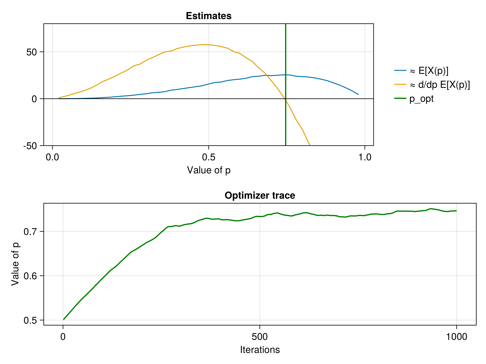
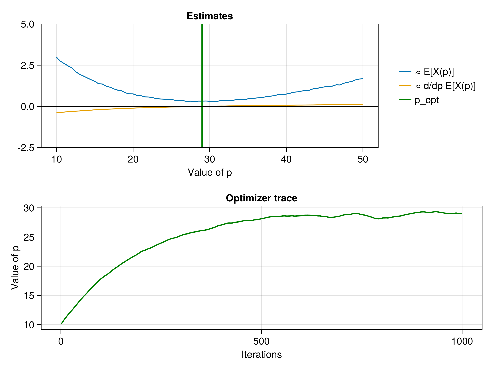

Stochastic optimizations with discrete randomness
In this tutorial, we solve two stochastic optimization problems using StochasticAD where the optimization objective is formed using discrete distributions. We will need the following packages:
using Distributions # defines several supported discrete distributions
using StochasticAD
using CairoMakie # for plotting
using Optimisers # for stochastic gradient descentOptimizing our toy program
Recall the "crazy" program from the intro:
function X(p)
a = p * (1 - p)
b = rand(Binomial(10, p))
c = 2 * b + 3 * rand(Bernoulli(p))
return a * c * rand(Normal(b, a))
endX (generic function with 1 method)Let's maximize $\mathbb{E}[X(p)]$! First, let's setup the problem, using the StochasticModel helper utility to create a trainable model:
p0 = [0.5] # initial value of p, wrapped in an array for use in the stochastic model
m = StochasticModel(p -> -X(p[1]), p0) # formulate as minimization problemStochasticModel{Vector{Float64}, Main.var"#1#2"}(Main.var"#1#2"(), [0.5])Now, let's perform stochastic gradient descent using Adam, where we use stochastic_gradient to obtain a gradient of the model.
iterations = 1000
trace = Float64[]
o = Adam() # use Adam for optimization
s = Optimisers.setup(o, m)
for i in 1:iterations
# Perform a gradient step
Optimisers.update!(s, m, stochastic_gradient(m))
push!(trace, m.p[])
end
p_opt = m.p[] # Our optimized value of p0.7541244699161642Finally, let's plot the results of our optimization, and also perform a sweep through the parameter space to verify the accuracy of our estimator:
## Sweep through parameters to find average and derivative
ps = 0.02:0.02:0.98 # values of p to sweep
N = 1000 # number of samples at each p
avg = [mean(X(p) for _ in 1:N) for p in ps]
derivative = [mean(derivative_estimate(X, p) for _ in 1:N) for p in ps]
## Make plots
f = Figure()
ax = f[1, 1] = Axis(f, title = "Estimates", xlabel="Value of p")
lines!(ax, ps, avg, label = "≈ E[X(p)]")
lines!(ax, ps, derivative, label = "≈ d/dp E[X(p)]")
vlines!(ax, [p_opt], label = "p_opt", color = :green, linewidth = 2.0)
hlines!(ax, [0.0], color = :black, linewidth = 1.0)
ylims!(ax, (-50, 80))
f[1, 2] = Legend(f, ax, framevisible = false)
ax = f[2, 1:2] = Axis(f, title = "Optimizer trace", xlabel="Iterations", ylabel="Value of p")
lines!(ax, trace, color = :green, linewidth = 2.0)
Solving a variational problem
Let's consider a toy variational program: we find a Poisson distribution that is close to the distribution of a negative Binomial, via minimization of the Kullback-Leibler divergence $D_{\mathrm{KL}}$. Concretely, let us solve
\[\underset{p \in \mathbb{R}}{\operatorname{argmin}}\; D_{\mathrm{KL}}\left(\mathrm{Pois}(p) \hspace{.3em}\middle\|\hspace{.3em} \mathrm{NBin}(10, 0.25) \right).\]
The following program produces an unbiased estimate of the objective:
function X(p)
i = rand(Poisson(p))
return logpdf(Poisson(p), i) - logpdf(NegativeBinomial(10, 0.25), i)
endX (generic function with 1 method)We can now optimize the KL-divergence via stochastic gradient descent!
# Minimize E[X] = KL(Poisson(p)| NegativeBinomial(10, 0.25))
iterations = 1000
p0 = [10.0]
m = StochasticModel(p -> X(p[1]), p0)
trace = Float64[]
o = Adam(0.1)
s = Optimisers.setup(o, m)
for i in 1:iterations
Optimisers.update!(s, m, stochastic_gradient(m))
push!(trace, m.p[])
end
p_opt = m.p[]29.02865184885702Let's plot our results in the same way as before:
ps = 10:0.5:50
N = 1000
avg = [mean(X(p) for _ in 1:N) for p in ps]
derivative = [mean(derivative_estimate(X, p) for _ in 1:N) for p in ps]
f = Figure()
ax = f[1, 1] = Axis(f, title = "Estimates", xlabel="Value of p")
lines!(ax, ps, avg, label = "≈ E[X(p)]")
lines!(ax, ps, derivative, label = "≈ d/dp E[X(p)]")
vlines!(ax, [p_opt], label = "p_opt", color = :green, linewidth = 2.0)
hlines!(ax, [0.0], color = :black, linewidth = 1.0)
ylims!(ax, (-2.5, 5))
f[1, 2] = Legend(f, ax, framevisible = false)
ax = f[2, 1:2] = Axis(f, title = "Optimizer trace", ylabel="Value of p", xlabel="Iterations")
lines!(ax, trace, color = :green, linewidth = 2.0)